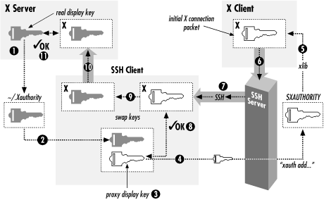

9.3. X Forwarding
Now that you've seen general TCP port forwarding, we move to a
new topic: forwarding of X protocol connections. X is a popular
window system for Unix workstations, and one of its best features is
its transparency. Using X, you can run remote X applications that
open their windows on your local display (and vice versa, running
local applications on remote displays). Unfortunately, the
inter-machine communication is insecure and wide open to snoopers.
But there's good news: SSH
X forwarding
makes the communication secure by tunneling the X protocol.
X forwarding also addresses some
firewall-related difficulties.
Suppose you're a system administrator with a set of exposed
production machines on the other side of a firewall from you. You log
into one of these machines using SSH, and want to run an graphical
performance-monitoring tool, such as Solaris's
perfmon, that uses the X Window System. You
can't, though, because to do that, the external machine needs
to make a TCP connection back to the internal machine you started on,
and the firewall blocks it (as it should, since X is quite insecure).
X forwarding solves this problem, permitting X protocol connections
to pass through the firewall, securely tunneled via SSH.
Our discussion begins with a brief overview of X and then explains
the details of X forwarding. In addition to explaining how to use X
forwarding, we also expose the internals of X authentication and how
it interacts with SSH, as well as other technical topics.
VNC Forwarding: An Alternative to X Forwarding
X forwarding is problematic from a security point of view, for the
same reason as X itself. As we will see, the design of X means that
remote programs must make separate network connections back to the
user; this requires yet another layer of authentication and
authorization, complicating the situation and opening an avenue of
attack. SSH X forwarding tries to secure this as much as possible,
but it may still be unacceptable in some environments.
An alternative technique is to use Virtual Network Computing
(VNC) over SSH. VNC is free software developed by AT&T
Laboratories in the United Kingdom, which provides remote GUI access
for Unix and Windows platforms. With VNC, you can open a window on
your Unix machine running X and have the desktop of a remote Windows
machine appear there, so you can operate the Windows box remotely.
Conversely, you can run the VNC client on a Windows machine and
connect to a remote X display running on a Unix host. Since VNC
involves only a single outbound connection, it is easier and safer to
tunnel through SSH than X. You can find out more about VNC (and
download the software) at:
http://www.uk.research.att.com/vnc/
|
9.3.1. The X Window System
The
X Window
System, or X, is the most widely used graphical display system for
Unix machines. Like SSH, X has clients and servers. X clients are
windowing application programs, such as terminal emulators, paint
programs, graphical clocks, and so forth. An X server is the
underlying display engine that processes requests from X clients,
communicating via a network protocol called the
X
protocol. A machine typically runs a single X server but
possibly many X clients.
Most important to our discussion, X supports sophisticated window
management over a network. X clients can open windows not only on
their local machine but also on other computers on the network,
whether they are down the hall or across the globe. To accomplish
this, an X client makes a network connection to a remote X server and
carries on a conversation, using the X protocol to draw on the remote
screen, receive remote keyboard events, learn the remote mouse
location, and so on. This obviously requires some type of security,
which we discuss soon.
A central concept of X is the
display,
an abstraction for the screen managed by an X server. When an X
client is invoked, it needs to know which display to use. Displays
are named by strings of the form
HOST:n.v,
where:
- HOST is the name of the machine running the X
server controlling the display.
- n is the display number, an
integer, usually 0. X allows for multiple displays controlled by a
single server; additional displays are numbered 1, 2, and so on.
- v is the visual number,
another integer. A visual is a virtual display. X supports multiple
virtual displays on a single, physical display. If there's only
one virtual display (which is the most common scenario), you omit the
".v", and the default is visual 0.
For example, on the machine
server.example.com,
display 0, visual 1 is represented by the display string
"server.example.com:0.1".
Under Unix, most X client programs let you specify the display string
in two ways: the
-d or
-display
command-line option, or the environment variable
DISPLAY. For
example, to run the X client program
xterm on the
only X display of the workstation anacreon, use the command-line
option:
$ xterm -d anacreon:0 &
or the environment variable:
$ setenv DISPLAY anacreon:0
$ xterm &
X is a large, deep software product whose documentation fills a dozen
O'Reilly books. We've barely scratched the surface with
our explanation, but you've now seen enough to understand X
forwarding.
9.3.2. How X Forwarding Works
Although X clients can communicate
with remote X servers, this communication isn't secure. All
interactions between the X client and server, such as keystrokes and
displayed text, can be easily monitored by network snooping because
the connection isn't encrypted. In addition, most X
environments use primitive authentication methods for connecting to a
remote display. A knowledgeable attacker can get a connection to your
display, monitor your keystrokes, and control other programs
you're running.
Once again, SSH comes to the rescue. An X protocol connection can be
routed through an SSH connection to provide security and stronger
authentication. This feature is called X forwarding.
X forwarding works in the following way. (As illustration, please
refer to
Figure 9-10.) An SSH client requests X
forwarding when it connects to an SSH server (assuming X forwarding
is enabled in the client). If the server allows X forwarding for this
connection, your login proceeds normally, but the server takes some
special steps behind the scenes. In addition to handling your
terminal session, it sets itself up as a proxy X server running on
the remote machine and sets the DISPLAY environment variable in your
remote shell to point to the proxy X display:
syrinx$ ssh sys1
Last login: Sat Nov 13 01:10:37 1999 from blackberry
Sun Microsystems Inc. SunOS 5.6 Generic August 1997
You have new mail.
sys1$ echo $DISPLAY
sys1:10.0
sys1$ xeyes
The "xeyes" X client appears on the screen
Figure 9-10. X forwarding
The DISPLAY value appears to refer to X display #10 on sys1, but
there's no such display. (In fact, there might be no true
displays on sys1 at all.) Instead, the DISPLAY value points to the X
proxy established by the SSH server, i.e., the SSH server is
masquerading as an X server. If you now run an X client program, it
connects to the proxy. The proxy behaves just like a
"real" X server, and in turn instructs the SSH client to
behave as a proxy X client, connecting to the X server on your local
machine. The SSH client and server then cooperate to pass X protocol
information back and forth over the SSH pipe between the two X
sessions, and the X client program appears on your screen just as if
it had connected directly to your display. That's the general
idea of X forwarding.
X forwarding can even solve the
firewall problem mentioned earlier,
as long as the firewall permits SSH connections to pass through. If a
firewall sits between your local and remote machines, and you run an
X client on the remote machine, X forwarding tunnels the X connection
through the firewall's SSH port to the local machine.
Therefore, the X client's windows can open on your local
display. If X forwarding isn't present, the firewall blocks the
connection.
Some aspects of X forwarding probably sound familiar from our earlier
explanation of port forwarding. In fact, X forwarding is just a
special case of port forwarding for which SSH has special support.
9.3.3. Enabling X Forwarding
X
forwarding is on by default in SSH1 and SSH2, but off in OpenSSH. If
you need to enable or disable X forwarding for your clients,
here's how to do it. Unlike general port forwarding, which
requires you to fiddle with TCP port numbers, X forwarding has only
an on/off switch. In your SSH client configuration file, use the
keyword
ForwardX11 with a value
yes (the default, to enable) or
no (to disable):
# SSH1, SSH2, OpenSSH
ForwardX11 yes
On the command line, you may also use
-x to disable
X forwarding:
# SSH1, SSH2, OpenSSH
$ ssh -x server.example.com
SSH2 and OpenSSH enables X forwarding with the following options:
# SSH2 only
$ ssh2 +x server.example.com
# OpenSSH only
$ ssh -X server.example.com
9.3.4. Configuring X Forwarding
The behavior of X forwarding can be modified through compile-time
configuration, serverwide configuration, and per-account
configuration.
9.3.4.1. Compile-time configuration
SSH1 and SSH2 can be compiled
with or without X support. The compile-time flags
--with-x and
-- without-x make this
determination:
# SSH1, SSH2
$ configure ... --without-x ...
In addition, if you compile with X support, you may set the default
behavior for X forwarding. In SSH1, you can enable or disable
forwarding by default in the client and the server separately, using
the
compile-time flags
-- enable-client-x11-forwarding (or
-- disable-client-x11-forwarding) and
-- enable-server-x11-forwarding (or
-- disable-server-x11-forwarding):
# SSH1 only
$ configure ... --disable-server-x11-forwarding ...
In SSH2, you can enable or disable all X forwarding by default with
-- enable-X11-forwarding or
-- disable-X11-forwarding:
# SSH2 only
$ configure ... --enable-X11-forwarding ...
Remember, enable/disable flags simply set the default behavior. You
can override these defaults with serverwide and per-account
configuration.
9.3.4.2. Serverwide configuration
The serverwide configuration
keywords
X11Forwarding
(SSH1, SSH2, OpenSSH) and its synonyms
ForwardX11
(SSH2) and
AllowX11Forwarding
(SSH2) enable or disable X forwarding in the SSH server. By default,
it is enabled:
# SSH1, SSH2, OpenSSH
X11Forwarding no
# SSH2 only: either will work
ForwardX11 no
AllowX11Forwarding no
The
X11DisplayOffset
keyword lets you reserve some X11 display numbers so
sshd can't use them. This keyword specifies
the lowest display number SSH may use, preventing
sshd from clashing with real X servers on the
lower-numbered displays. For example, if you normally run actual X
servers on displays
and 1, set:
# SSH1, OpenSSH
X11DisplayOffset 2
The
XAuthLocation
keyword specifies the path to the
xauth program,
which manipulates authorization records for X. We describe this
keyword later, after we discuss
xauth. [
Section 9.3.6.4, "Location of the xauth program"]
# SSH1, OpenSSH
XAuthLocation /usr/local/bin/xauth
9.3.4.3. Per-account configuration
In your SSH1 or OpenSSH
authorized_keys file, you may disallow X
forwarding for incoming SSH connections that use a particular key for
authentication. This is done with the option
no-X11-forwarding:
[
Section 8.2.8, "Disabling Forwarding "]
# SSH1, OpenSSH
no-X11-forwarding ...rest of key...
9.3.5. X Authentication
We've
mentioned in passing that X performs its own authentication when X
clients connect to X servers. Now we're going to dive into
technical detail on the inner workings of X authentication, why
it's insecure, and how SSH X forwarding builds on it to create
a secure solution.
In most cases, X forwarding simply works, and you don't have to
think about it. The following material is to aid your understanding
and satisfy any intense cravings for tech talk (both yours and ours).
9.3.5.1. How X authentication works
When an X client requests a connection to an X server, the server
authenticates the client. That is, the X server determines the
client's identity to decide whether to allow a connection to
the server's display. The current release of the X Window
system (X11R6) provides two categories of authentication: host-based
and key-based:
- Host-based X authentication
- The simpler method. Using the program
xhost, you indicate a list of hosts that may
connect to your X display. Notice that connections are authenticated
only by hostname, not by username. That is, any user on a listed host
may connect to your display.
- Key-based X authentication
- Uses the xauth
program to maintain a list of X authentication keys, or
display keys, for X clients. Keys are kept in a
file, usually ~/.Xauthority, along with other
data associated with the various displays the client wants to access.
When an X client connects to a server requiring authentication, the
client supplies the appropriate credentials for that display from the
xauth data. If authentication is successful, the
X client can then connect to the display managed by the X server.
Display keys are obtained from the X server in various ways depending
on the environment. For example, if you start the server directly on
the console of a machine using
xinit or
startx, these programs invoke an X server and
insert a copy of the server's key directly into your
xauth data. Alternatively, if you connect to a
remote machine that runs the X Display Manager (XDM), the key is sent
to your remote account when establishing your XDM session.
9.3.5.2. xauth and the SSH rc files
SSH has startup
files that can be set to execute on the server side when a client
logs in. These are the systemwide
/etc/sshrc and the per-account
~/.ssh/rc. These can be shell scripts or any
kind of executable program.
An important thing to note is that
sshd runs
xauth
only to add the proxy display key if it doesn't run an
rc program. If it does run an
rc program, it feeds the key type and data to
the program on a single line to its standard input, and it is up to
the
rc program to store the display key. This
feature provides a way to customize handling the display key, in case
just running
xauth isn't the right thing to
do in your situation.
9.3.5.3. Problems with X authentication
If you've used X, the
authentication was probably transparent and seemed to work fine.
Behind the scenes, however, the mechanism is insecure. Here are the
major problems:
- xhost is insecure
- Once you give permission for a remote host to connect to your
display, any user on that host can connect. As with the r-commands,
this authentication method depends on the network address of the
connecting host, which can be easy for an attacker to usurp.
- Key transfer may be manual and insecure
- Some remote-login protocols, such as telnet,
don't assist with X authentication. If your display keys
aren't available on a remote machine, you have to transfer them
yourself, either manually or by automating the transfer, perhaps in
your login script. This isn't only a nuisance but also
insecure, since you're sending the key in plaintext over the
network.
- The most common key-based method, MIT-MAGIC-COOKIE-1, is insecure
- Although it uses a random string of bits, or
cookie, as the xauth
display key, this key is transmitted in plaintext at the beginning of
every connection, where it can be intercepted and read.
- The remote host might not support your chosen X authentication method
- X11R6 supports other, more secure authentication methods. SUN-DES-1
employs Sun's secure RPC system, XDM-AUTHORIZATION-1 uses DES,
and MIT-KERBEROS-5 involves Kerberos user-to-user
authentication.[126] Unfortunately, these
methods are often not available in particular instances of the X
software. Sometimes they aren't compiled into X installations
due to cryptographic export restrictions; other times, the X version
is too old to support the more secure methods.
- If the remote host is insecure, your display key can be compromised
- In the best scenario, where the X server supports strong
authentication and your key can be copied securely to the remote
machine, you still have to store your sensitive display key there. If
that machine is untrustworthy, your key can be at risk. (SSH
doesn't have this problem, since only your public key is stored
on the SSH server machine.)
9.3.5.4. SSH and authentication spoofing
Through X forwarding, SSH provides
transparent, secure authentication and key transfer for X sessions.
This is done by a technique called
authentication
spoofing, as depicted in
Figure 9-11.
Authentication spoofing involves a fake display key, which we call
the
proxy key, that authenticates access to the SSH X
proxy server on the remote side. When relaying X traffic containing a
key, SSH cleverly substitutes the real display key. Here's how
it works.

Figure 9-11. Authentication of forwarded X connections
The players begin in the following positions. You are logged into a
local machine with a local display. The local machine runs an X
server and SSH clients. On the other side of the network connection,
an SSH server is running on a remote machine, where you invoke X
clients. The goal is for the remote X clients to appear on your local
display by way of SSH.
First, you run a local SSH client, asking it to set up X forwarding.
The SSH client requests X forwarding from the remote SSH server, and
it also reads your local display key from your
.
Xauthority file.
Next, the SSH client generates a proxy key. This is a string of
random data of the same length as your local display key. The SSH
client then sends the proxy key and its key type (e.g.,
MIT-MAGIC-COOKIE-1)
to the remote machine, and the SSH server runs the
xauth program on your behalf to associate the
proxy key with your local display. The stage is now set for X
forwarding.
When you start a remote X client, your local SSH client connects to
your local X display. It then watches for the first X protocol
message sent over the forwarded connection and treats it specially.
Specifically, the SSH client parses the message, finds the X
authentication key inside it, and compares it to the proxy key. If
the keys don't match, the SSH client rejects and closes the
connection. Otherwise, if the keys match, the SSH client substitutes
the real display key in place of the proxy key and relays the
modified message to your local X server. The X server, blissfully
unaware that a key switch has taken place, reads the display key and
proceeds normally with X authentication. The forwarded X connection
is now established.
X
forwarding with authentication spoofing solves all but one of the X
authentication problems we raised earlier:
- xhost
- X forwarding doesn't use xhost. (By the
way, make sure to disable all xhost permissions
when using X forwarding, or you will undermine the X security
provided by SSH.)
- Key transfer
- SSH transfers the X display key automatically and runs
xauth on your behalf to install it on the remote
side. The transfer is secure since the key travels over the encrypted
SSH connection.
- MIT-MAGIC-COOKIE-1 insecurity
- The key transmitted at the beginning of every X session is now
encrypted, along with the rest of the X traffic, inside the SSH
session. This greatly increases the operational security of this
common X authentication scheme.
- Untrustworthy remote hosts
- With authentication spoofing, only the proxy key, not the true
display key, is sent to the remote host. The proxy key is good only
for connecting to your display through SSH, not for connecting to
your display directly. As soon as your SSH session ends, the proxy
key becomes useless. Since SSH sessions come and go, but some people
leave their X sessions up (with the same key) for days, X forwarding
can be a great improvement.
9.3.5.5. Improving authentication spoofing
The
remaining problem with X forwarding is the possibility of unsupported
X authentication mechanisms. The local side can use a more
sophisticated authentication method a remote host might not support.
In theory, SSH X forwarding can solve this problem by always
installing a proxy key of type MIT-MAGIC-COOKIE-1, no matter what
local authentication method is actually in use. After the SSH client
has checked the X client's key against the proxy key for a
match, its client could then generate and substitute whatever local
authenticator is required using the true authentication type and key.
Unfortunately, SSH implementations don't go this far. The
server compares keys literally as bit strings, and the SSH client
substitutes keys verbatim, regardless of the key types. As a result,
if you use a stronger X authentication method such as
XDM-AUTHORIZATION-1,
sshd blindly compares an encrypted authenticator
with the proxy key, rightly determine that they don't match,
and invalidly rejects the connection. The failure is silent and
mysterious; we wish the software would detect the presence of an
unsupported mode and issue a warning when setting up the connection.
If SSH knew the details of all X authentication modes, it could check
the proxy authenticators on one side and generate correct ones for
the X server on the other. However, this is a significant development
effort, though perhaps one could link SSH against the X11 libraries
to obtain the necessary algorithms. SSH would also have to deal with
differing key data lengths, constructing a new X message to hold the
proxy key instead of copying it to an existing message.
It would also be useful if X forwarding could be used without
authentication spoofing. Then you could arrange your own security for
the connection by, say, using
xhost to allow any
connection from your local machine (and hence the SSH X proxy), while
still applying key-based authentication to X connections originating
from elsewhere. You can accomplish this with general port forwarding,
as discussed in the next section, but direct support is more
convenient.
9.3.5.6. Nonstandard X clients
X clients generally do X
xauth-style authentication by virtue of having
been linked against Xlib, the common X programming library.
Occasionally, though, you run across particular X client programs
that don't use Xlib and simply ignore authentication issues.
Since you can't turn off SSH X authentication spoofing, you
can't use such programs across SSH X forwarding; you get this
message:
X11 connection requests different authenticationprotocol: 'MIT-MAGIC-COOKIE-1'
vs. ''
You can, however, use a general port forwarding instead. For example:
foo% ssh -R6010:localhost:6000 bar
bar% setenv DISPLAY bar:10
Note that this bypasses the discipline imposed by X forwarding, of
requiring
xauth authentication on forwarded X
connections. If your real X server is using
xhost
for access control, this port forwarding allows anyone on host foo to
connect to your X server. Use this sort of thing with caution if you
need to.
9.3.6. Further Issues
As we've said, X forwarding usually works fine without any
special effort on your part. In some special situations, however, you
might need to take some extra steps.
9.3.6.1. X server configuration
In order for X forwarding to
work, your X server must accept the proxy X connections from your SSH
client. This is sometimes not set up to begin with, because normal
use doesn't require it. For example, if you're using an X
server on a PC to access a remote Unix machine via XDM, you might
never run local X clients at all, and they may not be allowed by
default. You can run
xhost
+localhost to allow all connections from the your
PC, while still applying key-based authentication to connections from
other sources. This allows SSH-forwarded (and authenticated)
connections to be accepted.
9.3.6.2. Setting your DISPLAY environment variable
SSH
sets the DISPLAY variable automatically only if X forwarding is in
effect. If you don't use X forwarding but want to use X on a
remote machine you logged into via SSH, remember that you have to set
the DISPLAY variable yourself. You should only do this when the both
machines are on the same, trusted network, as the X protocol by
itself is quite insecure.
Be careful not to set DISPLAY unintentionally!
It is common for people to set the DISPLAY variable in a login
command file or by other means. If you're not careful, this can
make your X connections insecure without your noticing. If you use
SSH to tunnel through a firewall that blocks normal X connections,
then of course you'll notice because your X clients won't
work. But if normal X connections are possible but undesirable, and X
forwarding isn't in effect, your X programs will work but will
(silently) not be secured. This is a good reason to block X traffic
at the firewall if it presents a security risk or to configure your X
server to accept connections only from the local host (the source of
the SSH-forwarded X connections). If that's not feasible, you
may want to put something like this in your login script:
#!/bin/csh
if ($?DISPLAY) then
set display_host = `expr "$DISPLAY" : '\(.*\):'`
set display_number = `expr "$DISPLAY" : '.*:\([^.]*\)'`
set my_host = `hostname`
set result = `expr '(' "$display_host" = "$my_host" ')' '&' '(' \
"$display_number" '>' "0" ')'`
if ($result == 0) then
echo "WARNING: X display $DISPLAY does not appear to be protected by SSH!"
echo "unsetting DISPLAY variable just to be safe"
unsetenv DISPLAY
endif
endif
9.3.6.3. Shared accounts
If you share a single account among
multiple people, you may have some trouble with X forwarding. For
example, it is common for a group of sysadmins to share use of the
root account. For each person to retain their own environment when
using the root account, they may set their USER, LOGNAME, and HOME
environment variables explicitly to reflect their personal accounts
rather than the root account. If you use SSH to log into the root
account with X forwarding turned on, though, it adds the proxy
xauth key to root's
.Xauthority file before the shell reads your
login script and resets these environment variables. The result is
that once you're logged in and try to use X, it fails: the X
client looks in your
.Xauthority file (because
of the setting of your HOME variable), but the key isn't there.
You can deal with this problem by setting the XAUTHORITY variable to
point to root's
.Xauthority file, or by
using code like the following in your login script to copy the needed
key into your personal one:
if (($uid == 0) && ($?SSH_CLIENT) && ($?DISPLAY)) then
# If I do ssh -l root with X forwarding, the X proxy server's xauth key
# gets added to root's xauth db, not mine. See if there's an entry for my
# display in root's xauth db...
set key = `bash -c "xauth -i -f /.Xauthority list $DISPLAY 2> /dev/null"`
# ... and if so, copy it into mine.
if ($? == 0) then
xauth -bi add $key
chown res ~res/.Xauthority >& /dev/null
endif
endif
9.3.6.4. Location of the xauth program
Remember that
sshd runs the
xauth program
on your behalf, to add the proxy key to your
.Xauthority file
on the remote side. The location of the
xauth
program is discovered when you configure the SSH package and compiled
into the
sshd executable. If
xauth is subsequently moved, X forwarding
won't work (
ssh -v reveals this explicitly).
For SSH1 and OpenSSH, the system administrator on the server side can
use the serverwide configuration keyword
XAuthLocation
to set the path to the
xauth program without
having to recompile
sshd1:
# SSH1, Open SSH
XAuthLocation /usr/local/bin/xauth
XAuthLocation can also appear in the client
configuration file (OpenSSH only); the client uses
xauth to get the local X display key.
9.3.6.5. X forwarding and the GatewayPorts feature
The
GatewayPorts (
-g) feature
discussed earlier applies only to general port forwarding, not to X
forwarding. The X proxies in SSH1, SSH2, and OpenSSH always listen on
all network interfaces and accept connections from anywhere, though
those connections are then subject to X authentication as described
earlier. To restrict X client source addresses, use TCP-wrappers,
which we discuss in the next section.
 |  |  |
| 9.2. Port Forwarding |  | 9.4. Forwarding Security: TCP-wrappers and libwrap |